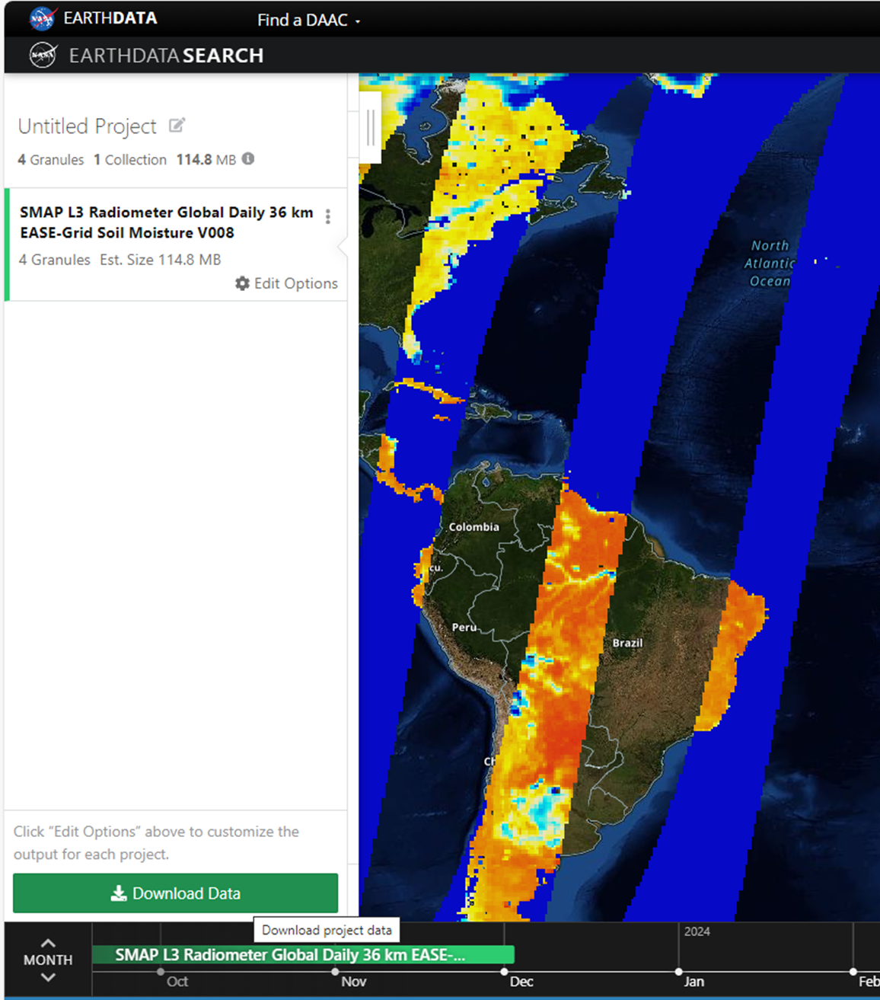
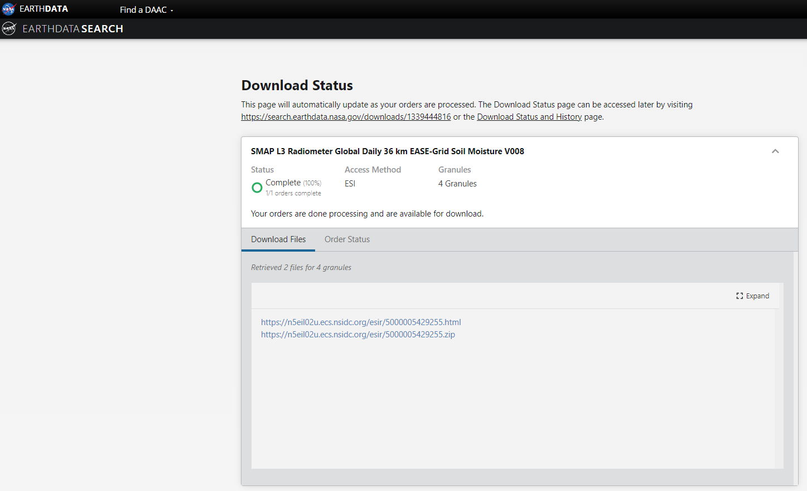
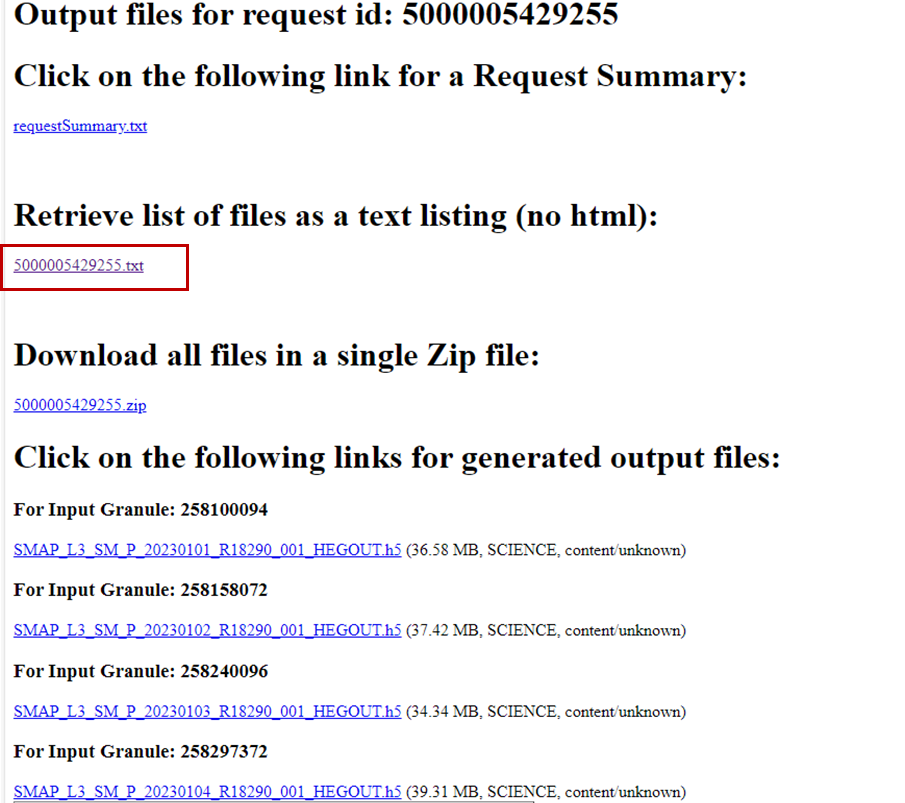
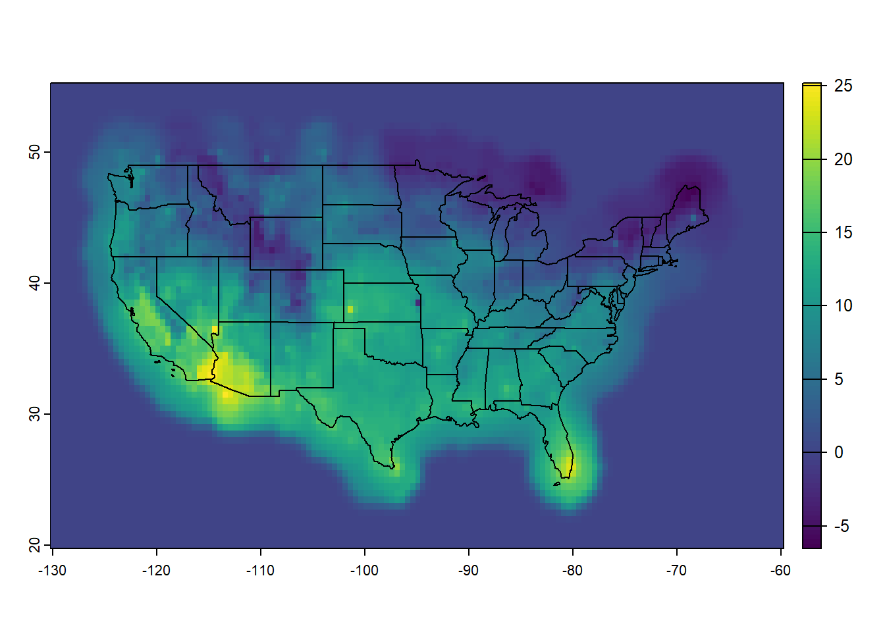
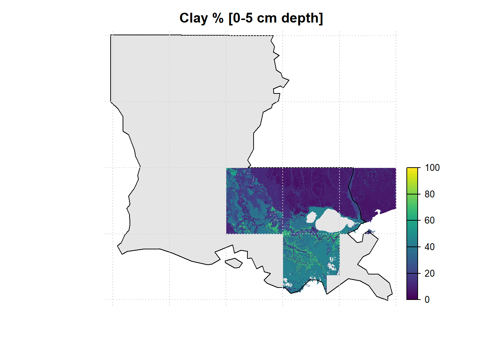

A snapshot of NOAA’s Physical Sciences Lab’s portal for gridded climate data access.
This website provides several land and climate variables such as: CPC Global Unified Gauge-Based Analysis of Daily Precipitation, CPC Global Temperature, NCEP/NCAR Reanalysis, Livneh daily CONUS near-surface gridded meteorological and derived hydrometeorological data
NASA Earth Data provides customization options for bulk data download. Lets say we are interested in downloading global SMAP Level 3 soil moisture. We start by selecting the product, and specify start/ end date as needed.
Search for the product, click “Download All”. You will be taken to a log-in page.
After logging in, Click “Edit Options”-> “Customize” and select options as needed. Click “Done”.

Click “Download Data”

A “Download Status” page will appear. Click on the “.html” link.

Several download options will available. For bulk download, click the link under “Retrieve list of files as a text listing (no html)”
You will be able to see the active download links.
Copy and Paste these links in any internet download manager (my favorite in Chrono for Google Chrome), Select output location (typically an external hard drive) and let the download begin.
6.2 Programmatic Data Acquisition
In the HTTP, FTP or HTP links provided before, one can download a file by clicking on the individual hyperlink. Alternatively, we can use download.file function to download the file programmatically in R. This help us by opening the path to automate download and processing of multiple files with minimal supervision.
Raster and netCDF are two popular formats of gridded climate data dissemination and archiving. NetCDF (Network Common Data Form) is a set of software libraries and machine-independent data formats that support the creation, access, and sharing of array-oriented scientific data. It is also a community standard for sharing scientific data [Unidata | NetCDF (ucar.edu) https://www.unidata.ucar.edu/software/netcdf/]. To be in a NetCDF format, the dataset must be:
Self-Describing. A netCDF file includes information about the data it contains.
Portable. A netCDF file can be accessed by computers with different ways of storing integers, characters, and floating-point numbers.
Scalable. A small subset of a large dataset may be accessed efficiently.
Appendable. Data may be appended to a properly structured netCDF file without copying the dataset or redefining its structure.
Shareable. One writer and multiple readers may simultaneously access the same netCDF file.
Archivable. Access to all earlier forms of netCDF data will be supported by current and future versions of the software.
Two widely used formats of gridded climate data type
6.2.0.1 Downloading Raster files
Let us take an example of us_tmax data available at: https://ftp.cpc.ncep.noaa.gov/GIS/GRADS_GIS/GeoTIFF/TEMP/us_tmax/
Right-click on the raster file for 20240218, and copy the file path. We will then use this link to access the files programmatically using Client URL, or cURL - a utility for transferring data between systems. We will download the raster using download.file to local disk, and saved with a uder-defined name tmax_20240218.tif.
# Copied path of the rasterdata_path <-"https://ftp.cpc.ncep.noaa.gov/GIS/GRADS_GIS/GeoTIFF/TEMP/us_tmax/us.tmax_nohads_ll_20240218_float.tif"# Download the raster using download.file, assign the name tmax_20240218.tif to the downloaded download.file(url = data_path, method="curl",destfile ="tmax_20240218.tif") # Plot downloaded filelibrary(terra)tempRas=rast("tmax_20240218.tif") # Import raster to the environment usSHP=terra::vect(spData::us_states) # Shapefile for CONUSplot(tempRas)plot(usSHP, add=TRUE)

Now that we have the tmax_20240218 raster, let us extract the values for certain selected locations: s
# Import sample locations from contrasting hydroclimatelibrary(readxl)loc=read_excel("./SampleData-master/location_points.xlsx")print(loc)
# A tibble: 3 × 4
Aridity State Longitude Latitude
<chr> <chr> <dbl> <dbl>
1 Humid Louisiana -92.7 34.3
2 Arid Nevada -116. 38.7
3 Semi-arid Kansas -99.8 38.8
# Value of the lat & lon of the locationslatlon=loc[,3:4] print(latlon)
# A tibble: 3 × 2
Longitude Latitude
<dbl> <dbl>
1 -92.7 34.3
2 -116. 38.7
3 -99.8 38.8
# Extract time series using "terra::extract"loc_temp=terra::extract(tempRas, latlon, #2-column matrix or data.frame with lat-longmethod='bilinear') # Use bilinear interpolation (or ngb) optionprint(loc_temp)
# Export the modified data as CSVwrite.csv(loc, "df_with_temp.csv")
6.2.0.2 Downloading netCDF
We will now download a netCDF of global daily precipitation for the year 2023 from CHIRPS, accessible through the link: https://data.chc.ucsb.edu/products/CHIRPS-2.0/global_daily/netcdf/p05/chirps-v2.0.2023.days_p05.nc
# Copied path of the rasterdata_path <-"https://data.chc.ucsb.edu/products/CHIRPS-2.0/global_daily/netcdf/p05/chirps-v2.0.2023.days_p05.nc"# Download the raster using download.file, assign the name "daily_pcp_2023.nc" to the downloaded if (file.exists("daily_pcp_2023.nc")==FALSE){download.file(url = data_path, method="curl",destfile ="daily_pcp_2023.nc") }# Plot downloaded filelibrary(terra)pcp=rast("daily_pcp_2023.nc") # Import raster to the environment print(pcp) # Notice the attributes (esp. nlyr, i.e. number of layers, unit and time)
worldSHP=terra::vect(spData::world) # Shapefile for CONUS# Plot data for a specific layerplot(pcp[[100]]) # Same as pcp[[which(time(pcp)=="2023-04-10")]]plot(worldSHP, add=TRUE)points(latlon, pch=19, col="red")
Next we will extract values for the selected locations. However, compared to the temperature data, which was a single layer, precipitation NetCDF has 365 layers, one for each day in the year 2023. So, when we extract values using the point locations, 365 values for each location are extracted.
# Import sample locations from contrasting hydroclimatelibrary(readxl)loc=read_excel("./SampleData-master/location_points.xlsx")print(loc)
# A tibble: 3 × 4
Aridity State Longitude Latitude
<chr> <chr> <dbl> <dbl>
1 Humid Louisiana -92.7 34.3
2 Arid Nevada -116. 38.7
3 Semi-arid Kansas -99.8 38.8
# Value of the lat & lon of the locationslatlon=loc[,3:4] print(latlon)
# A tibble: 3 × 2
Longitude Latitude
<dbl> <dbl>
1 -92.7 34.3
2 -116. 38.7
3 -99.8 38.8
# Extract time series using "terra::extract"loc_pcp=terra::extract(pcp, latlon, #2-column matrix or data.frame with lat-longmethod='bilinear') # Use bilinear interpolation (or ngb) option# View data sampleloc_pcp[,1:8] # View(loc_pcp)
# Plot hyetograph for the location in Louisianalibrary(ggplot2)pcp_df1=data.frame(time=time(pcp),pcp=as.numeric(loc_pcp[1,-c(1)])) # Select first row, exclude the first column# ggplotggplot(pcp_df1,aes(x=time,y=pcp)) +geom_bar(stat ='identity')+theme_bw()+ylab("Precipitation [mm/day]")+xlab("Time [Days]")

# Export the extracted data as CSVwrite.csv(loc, "extracted_pcp2023.csv")